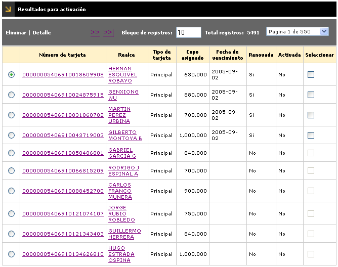
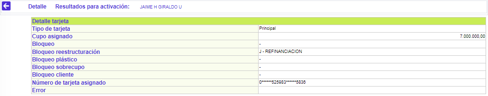

Variación masiva de cupos
Resultados para activación: Luego de ser evaluados los criterios de selección, en esta opción se muestra el producto de las tarjetas para activar.
El formulario contiene los enlaces: Eliminar y Detalle. Adicionalmente, cuenta en la parte inferior con dos botones para Activar tarjetas que hayan sido seleccionadas, y otra para Activar todas las tarjetas. También cuenta con un botón para volver a la opción anterior.

Número de tarjeta |
Muestra el número de producto que ha cumplido con los criterios de selección, como candidatos al proceso de variación de cupo. |
Realce |
Corresponde al nombre del titular del producto correspondiente al número de tarjeta anterior. |
Tipo tarjeta |
Indica la clase de producto sobre el que se efectuará el proceso de renovación, es decir, si éste se efectuará sobre las tarjetas principales o adicionales (extendidas o amparadas). |
Cupo asignado |
Corresponde al cupo asignado del producto candidato al proceso de renovación masiva. |
Fecha de vencimiento |
Informa acerca de la fecha de vencimiento del producto seleccionado de acuerdo con los criterios definidos. |
Renovada |
Una vez que la totalidad de las tarjetas de la lista han sido renovadas, esta casilla se marca automáticamente y no permite seleccionar para renovación ninguna de las tarjetas allí contenidas. Si la entidad posteriormente desea renovar la totalidad o alguno de los registros contenidos en esa lista, ésta se invoca siguiendo el procedimiento de consulta arriba señalado, se desmarca este campo y se graba; después de efectuada la modificación pueden volver a renovarse los registros allí contenidos. |
Activada |
Indica las tarjetas renovadas y que ya fueron activadas. |
Seleccionar |
En este campo la entidad selecciona aquellas tarjetas renovadas que desee activar. |
Detalle: Si el usuario invoca la opción Detalle se despliega el siguiente formulario.

Bloqueo saldo |
Muestra el bloqueo que posee cada uno de los productos por dicho concepto una vez aplicados los criterios de selección. |
Bloqueo reestructuración |
Registra el bloqueo que posee cada uno de los productos por dicho concepto una vez aplicados los criterios de selección. |
Bloqueo plástico |
Señala el bloqueo que posee cada uno de los productos por dicho concepto una vez aplicados los criterios de selección. |
Bloqueo sobrecupo |
Indica el bloqueo que posee cada uno de los productos por dicho concepto una vez aplicados los criterios de selección. |
Bloqueo cliente |
Muestra el bloqueo que posee cada uno de los productos por dicho concepto una vez aplicados los criterios de selección. |
Error |
En el caso de que los productos seleccionados de acuerdo con los criterios hayan sido candidatos pero no pudieron ser variados sus cupos exitosamente, en este campo aparece el motivo. |
Activar tarjetas: Una vez que la(s) tarjeta(s) ha(n) sido renovada(s) con esta opción se activan aquellas que se encuentren marcadas o seleccionadas.
El formulario cuenta en la parte superior con la opción para volver al formulario de Resultados, y dos botones en la parte inferior para Activar las tarjetas.
|
Activar tarjetas: El sistema sólo activa aquellas tarjetas que se encuentren seleccionadas en el formulario. |
|
Activar todas las tarjetas: Al invocar este botón el sistema tiene en cuenta el total de tarjetas encontradas en el formulario, sin importar si están seleccionadas o no. |